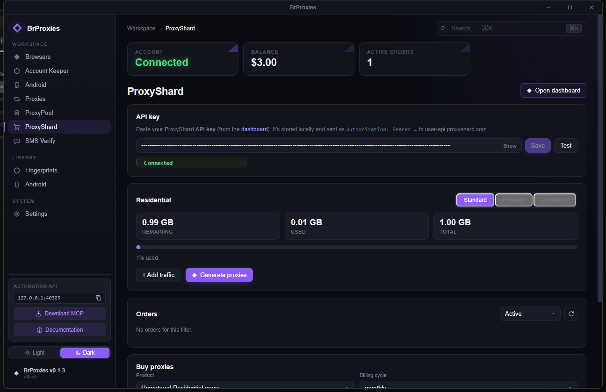
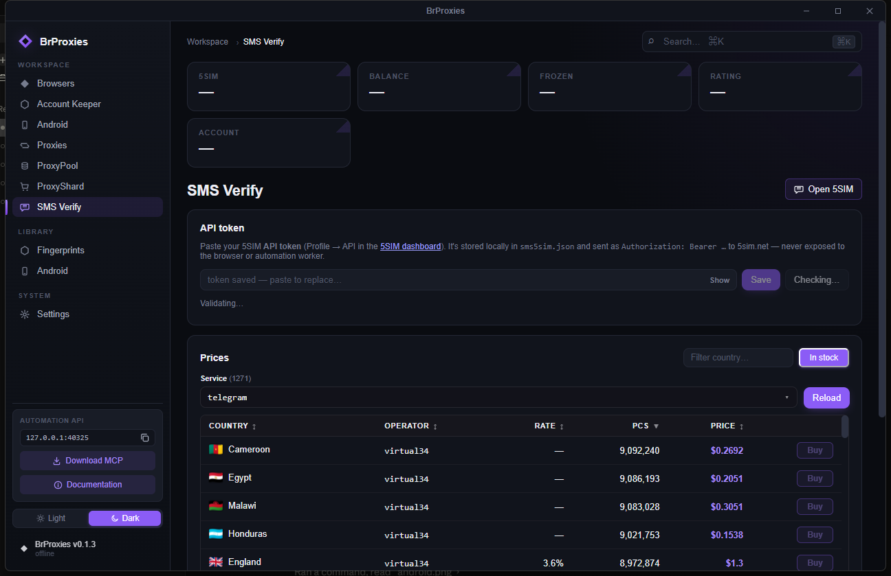
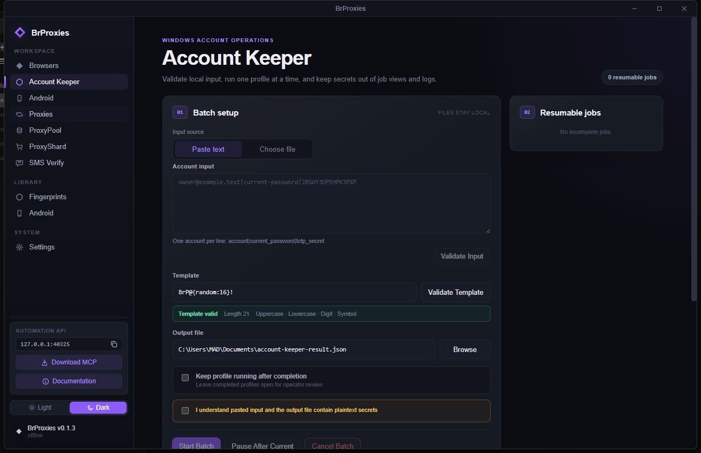
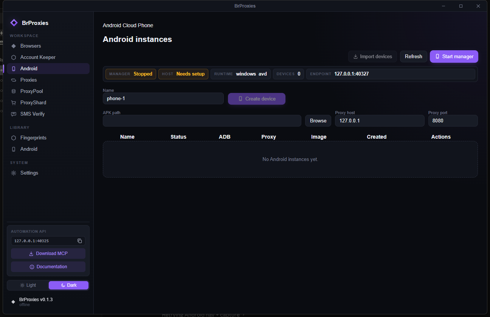
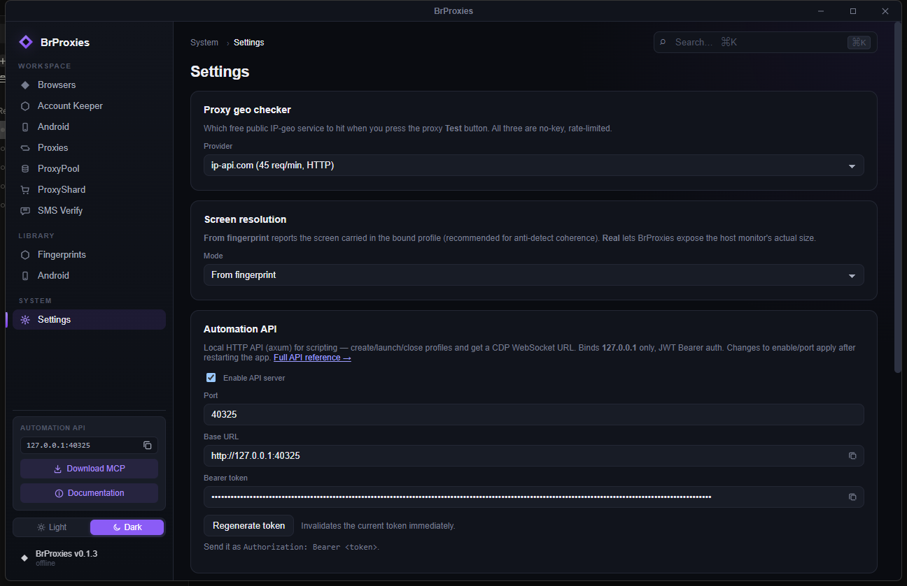

Anti-detect browsing
at scale.
Isolated browser profiles, real fingerprint spoofing, built-in proxy infrastructure, SMS verification, and full automation + MCP — folded into one desktop launcher instead of a stack of paid tools and glue scripts.

What's inside
The whole identity stack, in one window.
Every profile is a fully isolated Chromium instance with its own fingerprint, proxy, cookies, and storage — and every part is scriptable through a local API and MCP server.
Browser profiles
Create, clone, pin, tag, organize, and launch isolated Chromium profiles — each with its own user-data-dir, persistent cookies, and bound proxy.
Fingerprints
A 170-profile library covering device, screen, WebGL/WebGPU, locale, timezone, WebRTC, media devices, geolocation, and canvas/audio noise.
Proxies
Add HTTP/HTTPS/SOCKS5, run TCP/UDP/geo checks, bind proxies to profiles, and see live country + latency per row.
ProxyPool
Harvest public proxy candidates, live-test them, store working rows in Redis, recheck on a schedule, and promote the good ones.
ProxyShard
Buy and manage residential proxy traffic — standard, premium, and unmetered — from inside the app.
SMS Verify (5SIM)
Browse 1,271 services with live prices, rent a number, and pull the OTP — with a live countdown, order history, and cancel/ban.
Account Keeper
Rotate passwords for authorized accounts one at a time — persistent profiles, DPAPI-protected vault, secrets kept local, manual recovery.
Android Manager
Run real Android Studio AVD instances on Windows, open the screen with scrcpy, and import running ADB devices.
Automation API + MCP
A local HTTP API (127.0.0.1:40325, JWT Bearer) and MCP server expose profile launch, CDP handoff, and account operations to scripts and AI agents.
The workspace
Ten panels, one window.
Every screen below is the live app — not a marketing mockup.







Quick start
Two commands on Windows.
Helper scripts live in smart launch/. The run script starts bundled Windows Redis for ProxyPool persistence, cleans up stale sidecars, then opens the app.
:: build web assets + desktop app
"smart launch\build.bat"
:: start Redis, cleanup ProxyPool, run launcher
"smart launch\run.bat"Build
Run build.bat after cloning or after dependency changes. Smart mode caches hashes and skips unchanged setup.
Run
Run run.bat. It boots Redis on 127.0.0.1:6380, stops stale sidecars, then opens BrProxies.
Automate
Enable the Automation API in Settings, copy the Bearer token, and drive profiles from your scripts, SDKs, or an MCP client.
Validation
Fingerprints that pass the checkers.
Real results from a launched BrProxies profile against the public detection suites — not marketing mockups.